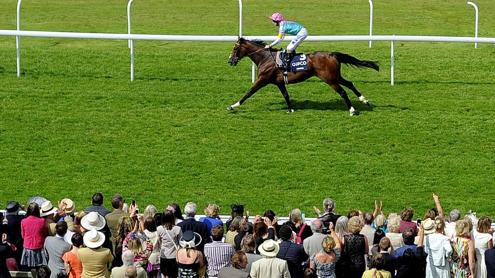

Frankel, el invicto de Juddmonte que domina la cría europea desde Banstead Manor
Más de una década después de retirarse sin conocer la derrota, Frankel sigue marcando el paso de la cría del pura sangre europeo. El hijo de Galileo, residente en Banstead Manor Stud, en Newmarket, encabeza año tras año los rankings de sementales de Bloodhorse y de las principales publicaciones del sector…

Más de una década después de retirarse sin conocer la derrota, Frankel sigue marcando el paso de la cría del pura sangre europeo. El hijo de Galileo, residente en Banstead Manor Stud, en Newmarket, encabeza año tras año los rankings de sementales de Bloodhorse y de las principales publicaciones del sector británico, y sus productos continúan acumulando triunfos en los Grupos I de Inglaterra, Irlanda y Francia.
Nacido en febrero de 2008 en la propia Banstead Manor —propiedad histórica de la operación de cría del jeque Khalid Abdullah, hoy gestionada por Juddmonte—, Frankel es producto de uno de los cruces más eficaces del catálogo europeo: Galileo, padre dominante del fondo irlandés, sobre la yegua Kind, hija de Danehill. Esa combinación de velocidad de Danehill y fondo de Sadler's Wells vía Galileo, sumada al manejo de Sir Henry Cecil en su Warren Place de Newmarket, dio al turf uno de sus iconos modernos.
Sobre la pista, Frankel firmó un palmarés irrepetible: catorce victorias en catorce salidas y diez Grupos I conquistados entre 2010 y 2012. Con Tom Queally a los mandos, se impuso en las 2.000 Guineas británicas de 2011 por seis cuerpos, dominó el Sussex Stakes de Goodwood ante el campeón Canford Cliffs, arrolló en la Queen Anne Stakes de Royal Ascot 2012 por once cuerpos —una de las exhibiciones más recordadas del meeting— y cerró su carrera ganando el Champion Stakes de Ascot. Timeform le concedió un rating de 147, la cifra más alta de su escala histórica.
En la valla de saltar a semental, ese capital deportivo se ha traducido en una fertilidad estadística poco común. De su primera promoción salió Cracksman, ganador de dos Champion Stakes consecutivos (2017 y 2018) para John Gosden; le siguieron Anapurna en los Oaks de Epsom de 2019, Logician en el St Leger del mismo año y, sobre todo, la cosecha 2021 con Adayar —ganador del Derby de Epsom y del King George— y Hurricane Lane —Irish Derby y St Leger—. Más recientemente, Westover firmó el Irish Derby de 2022, Soul Sister se llevó los Oaks de 2023 y Mostahdaf encadenó el Prince of Wales's Stakes y el International Stakes en la misma temporada. Frankel suma ya decenas de ganadores de prueba pattern repartidos por toda Europa.
Conviene recordar que toda esa descendencia procede de cubrición natural: el reglamento del General Stud Book —y, con él, las normativas equivalentes de la International Federation of Horseracing Authorities— prohíbe la inseminación artificial y la transferencia embrionaria en el pura sangre. Cada producto de Frankel exige el desplazamiento físico de la yegua a Banstead Manor durante la temporada de cubrición, lo que da idea de la logística y del volumen económico que mueve un semental de su nivel. Juddmonte mantiene su tarifa como privada en los últimos años, pero las publicaciones especializadas británicas lo siguen situando entre las cuotas más altas del libro europeo.
Para el aficionado español, Frankel representa también una referencia accesible: su sangre llega a yeguadas francesas y británicas que después comercializan productos en las grandes subastas de Tattersalls (Newmarket) y Arqana (Deauville), de donde proceden buena parte de los caballos que cada año debutan en la Zarzuela, San Sebastián o Sanlúcar. Mientras el invicto de Cecil siga cubriendo en Banstead Manor, su huella en el calendario europeo de Grupos I —y, por extensión, en la pista nacional— está garantizada.
— Redacción de Galope al Día